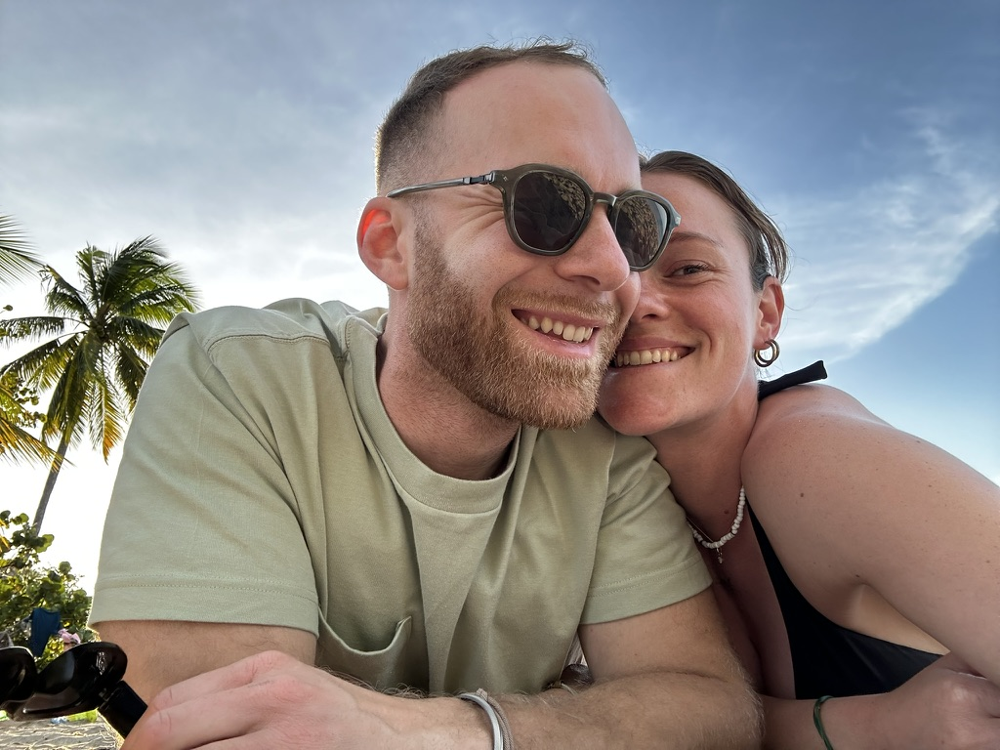
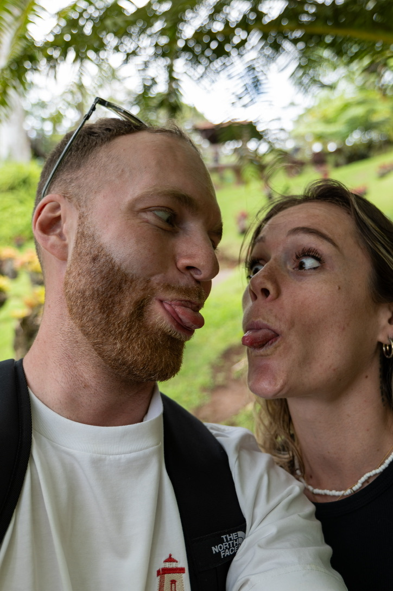
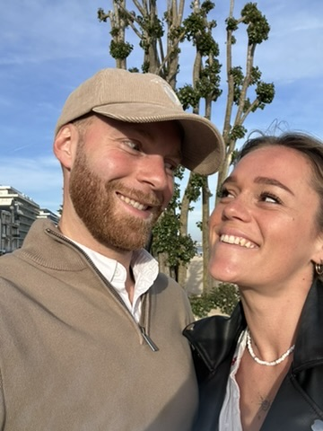
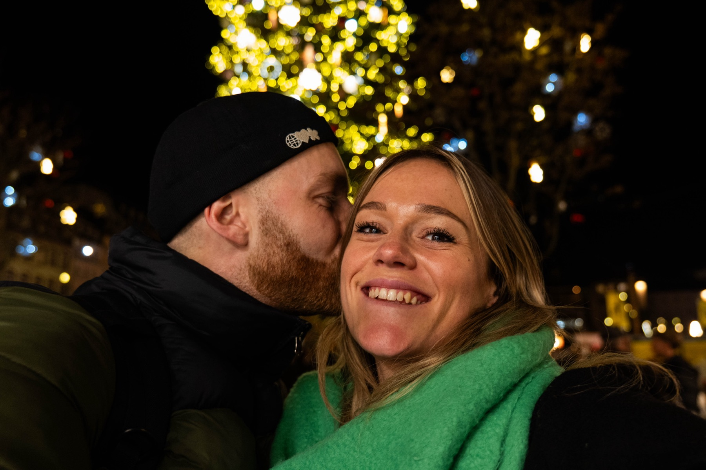
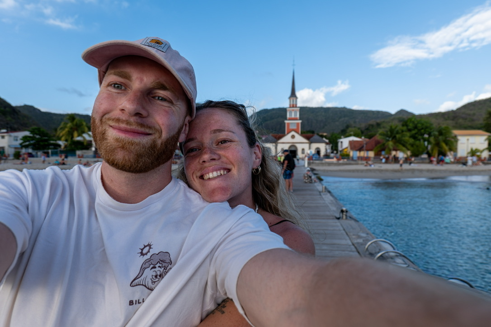
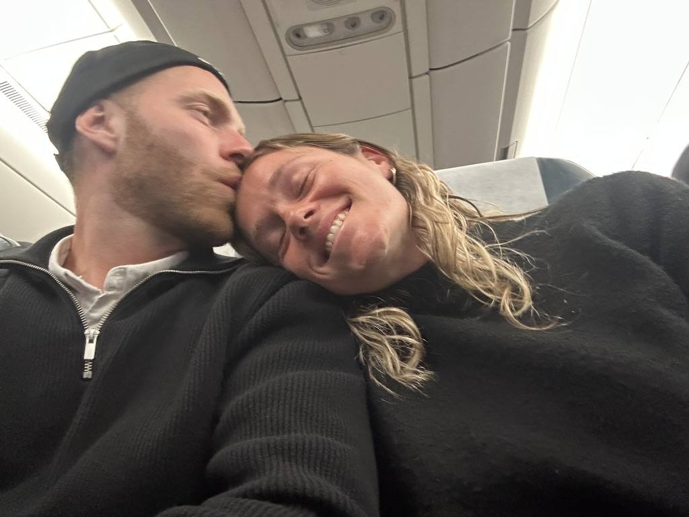
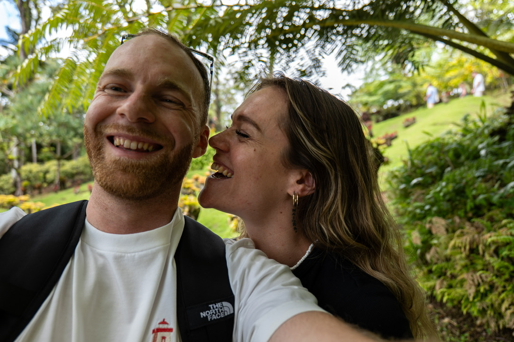

Emeline & Alex
Photo & Vidéo
Emeline & Alex
Photo & Vidéo







Deux vies, une seule histoire.
Avant d'être deux professionnels, on est un couple. On se connaît par cœur, on se comprend sans se parler, on a appris à s'aimer dans le quotidien autant que dans les grands moments. C'est cette intimité-là qu'on apporte avec nous, à chaque mariage.
On a voulu faire de notre complicité un métier. On capte mieux l'amour quand on le vit soi-même. Raconter votre histoire, ce n'est pas juste un travail pour nous : c'est une façon de continuer à célébrer la nôtre, à travers la vôtre.
On aime capturer vos rires, votre amour, et tous les moments clés de votre journée : le oui, la première danse, un regard qui se retient de pleurer, le chaos joyeux d'une salle en fête. Ce sont ces instants-là qu'on ne veut jamais manquer.
Ce qu'on veut transmettre, ce n'est pas seulement de belles images. C'est la possibilité de revivre ce jour-là, encore et encore.
Votre journée, vécue en entier.
Sur le terrain, on garde toujours un œil l'un sur l'autre. On se signale un détail, une lumière, un instant à ne pas manquer, sans jamais se gêner. Un regard, un sourire, et on se comprend.
Cette complicité, elle ne reste pas invisible. Les mariés la ressentent. Face à un couple qui se comprend d'un regard, on n'a pas l'impression d'être observés par deux prestataires qui travaillent chacun de leur côté, mais accompagnés par deux personnes qui savent déjà comment fonctionner ensemble. Ça peut vous mettre en confiance. Et votre journée devient une journée que vous vivez, pas une journée que vous jouez.
Nous sommes deux pour capter vos émotions, vos rires, votre bonne humeur. Emeline fige l'instant, Alex le prolonge.
Grâce à notre coordination, nous savons toujours où être, au bon moment, sans jamais vous gêner, ni nous gêner entre nous.
Ensemble, nous racontons votre journée dans son intégralité en passant par un reportage photo et une vidéo cinématographique.
Emeline
Ce que j'aime dans la photo, c'est ce qu'une image transmet sans qu'on ait besoin de le dire. Ce que la personne n'exprime pas avec des mots, mais qu'on ressent quand même sur la photo. J'aime le partage, l'instant, les détails : la couleur d'un coucher de soleil, l'éclat d'un rire. Pour moi, c'est avant tout un art. Un reportage complet de votre journée, raconté avec cette attention-là.
Alex
Ce que je cherche en vidéo, c'est raconter votre histoire comme un film. Y mettre de l'intensité, de l'amour, de l'émotion. Vous montrer votre amour tel que vous ne l'aviez jamais vu de l'extérieur, dans un film rempli de souvenirs que vous pourrez contempler encore et encore.
Le match des deux regards.
Deux regards, un seul récit.
Un duo, tout simplement.

Racontez-nous votre histoire.
Racontez-nous votre journée de mariage et ce que vous désirez.
On vous répondra avec le sourire et une réponse à toutes vos questions.